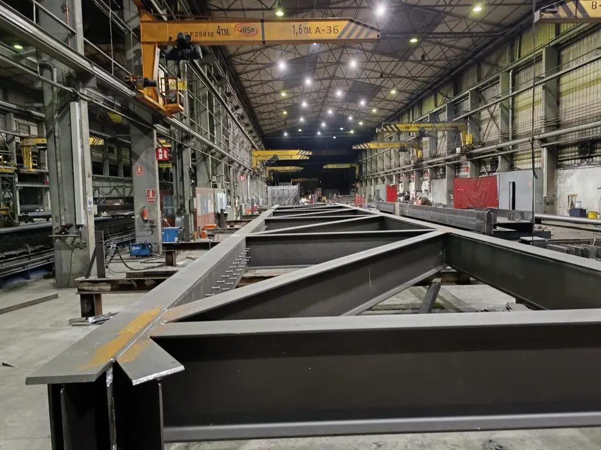
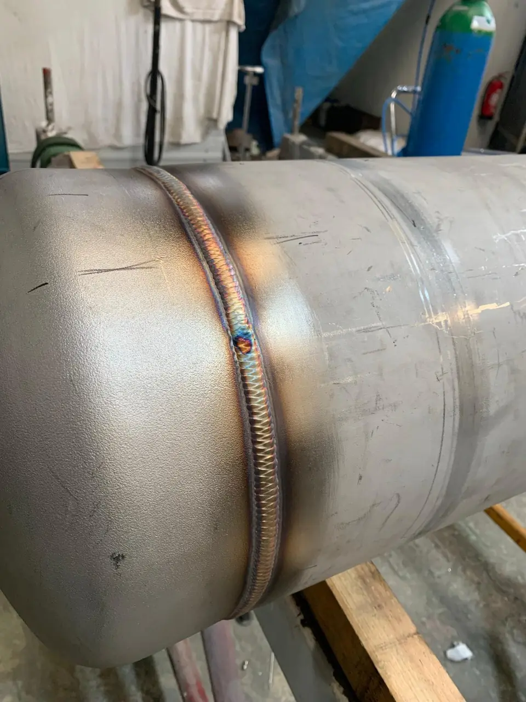
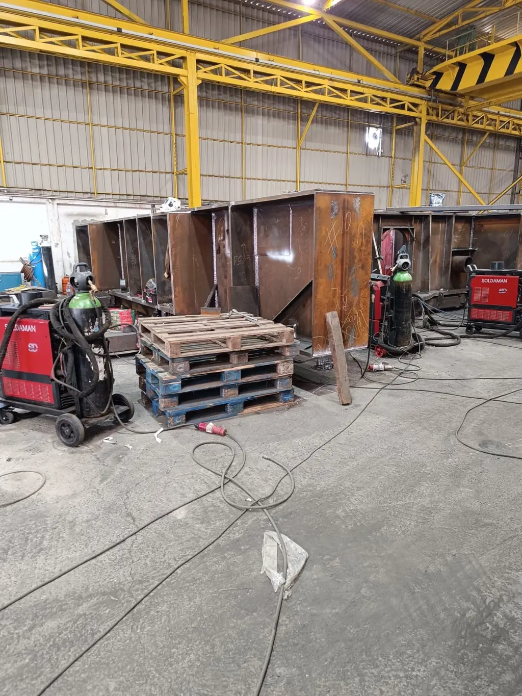
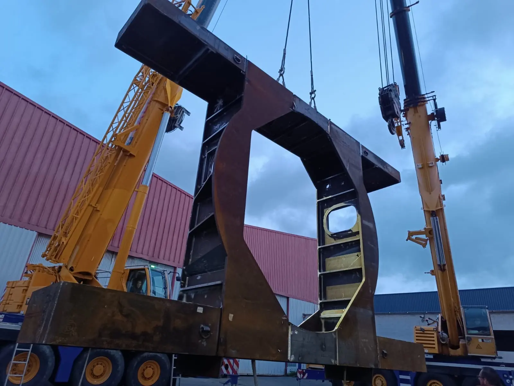

Spagna
Cameto
STMetal fornisce manodopera specializzata per rinforzare le squadre di fabbricazione e montaggio, secondo le esigenze del progetto.

Soluzioni industriali · Carpenteria metallica
Azienda specializzata in servizi integrati di carpenteria metallica e nella fornitura di manodopera altamente qualificata per il settore industriale.
Attivi in Portogallo e all’estero
Soluzioni innovative, efficienti e sicure.
Eccellenza tecnica in ogni progetto.
01 — Chi siamo
STMetal è un’azienda specializzata in soluzioni di carpenteria metallica per il settore industriale, in grado di eseguire fabbricazione, montaggio, saldatura e manutenzione industriale.
Dalla preparazione tecnica all’esecuzione in cantiere, adattiamo squadre e soluzioni alle esigenze di ogni progetto.
Qualità · Sicurezza · Impegno
Tubazioni · Carpenteria pesante · Strutture metalliche
Acciaio al carbonio · Inox · Super Duplex · P22/P91/P92
Montaggio · Installazione · Esecuzione in cantiere
Interventi e supporto per la manutenzione industriale.
02 — Competenze
Sette aree di competenza alla base dei progetti STMetal.

01
Fabbricazione, preparazione e montaggio di sistemi di tubazioni per applicazioni industriali.

02
Esperienza nella preparazione, fabbricazione e saldatura di materiali per applicazioni industriali ad alta esigenza tecnica.

03
Preparazione ed esecuzione di saldature per applicazioni industriali, compresi materiali ad alta esigenza tecnica.

04
Dal taglio alla preparazione finale per il montaggio in cantiere. Prefabbricazione controllata per ottimizzare l’esecuzione e ridurre i tempi in cantiere.

05
Fabbricazione di componenti metallici su misura per diverse applicazioni industriali.

06
Fabbricazione e montaggio di strutture per applicazioni industriali e civili.

07
Montaggio e installazione di componenti e strutture in ambiente industriale, secondo i requisiti tecnici e di sicurezza di ogni progetto.
03 — I nostri principi
I principi che guidano ogni squadra e ogni progetto STMetal.
Rigore tecnico in tutte le fasi del progetto.
Pianificazione ed esecuzione orientate alla sicurezza.
Squadre tecniche specializzate ed esperienza industriale.
Adattamento alle esigenze e alle dimensioni di ogni progetto.
Rispetto dei requisiti e degli obiettivi concordati con il cliente.
Attenzione alla qualità del servizio e alla soddisfazione del cliente.
04 — Esperienza industriale
Progetti e servizi eseguiti per partner industriali.
Spagna
STMetal fornisce manodopera specializzata per rinforzare le squadre di fabbricazione e montaggio, secondo le esigenze del progetto.

Spagna
Lavori di fabbricazione e montaggio di tubazioni industriali, integrandoci con le squadre e le esigenze specifiche del progetto.

Spagna
Servizi di manutenzione industriale, con l’intervento delle squadre STMetal secondo le esigenze operative del cliente.

Italia
Montaggio e saldatura speciale di tubazioni, con particolare attenzione ai lavori ad alta esigenza tecnica.
Fiducia costruita con l’esperienza industriale.
05 — Qualità
Sei pilastri alla base di ogni progetto STMetal.
Preparazione tecnica prima dell’esecuzione.
Monitoraggio delle dimensioni e dei requisiti del progetto.
Eseguita da professionisti qualificati.
Controllo dei giunti e dei requisiti tecnici.
Procedure orientate a un’esecuzione sicura.
Esperienza con Super Duplex · P22 · P91 · P92.
06 — Perché noi
I motivi che fanno di STMetal il partner giusto per il vostro progetto.
Esperienza in fabbricazione, saldatura e montaggio industriale.
Super Duplex · P22 · P91 · P92.
Fabbricazione · Saldatura · Montaggio · Manutenzione.
Professionisti adatti alle esigenze di ogni progetto.
Capacità di rinforzare le squadre ed eseguire lavori di vario tipo.
Attivi in Portogallo e all’estero.
07 — Come lavoriamo
Il processo che seguiamo dal primo contatto alla consegna finale di ogni progetto.
Comprendiamo il progetto e i requisiti tecnici.
Definiamo risorse, squadra e tempi.
Fabbrichiamo, saldiamo, montiamo o interveniamo secondo il progetto.
Seguiamo qualità e requisiti tecnici.
Concludiamo il lavoro puntando su qualità e soddisfazione del cliente.
08 — Contatti
Inviateci la vostra richiesta dal canale che preferite. Risponderemo il prima possibile.
Portogallo
Spagna
Preventivi e informazioni
Risposta il prima possibile

09 — Lavora con noi
Cerchiamo professionisti qualificati per cantieri in Portogallo e all’estero. Inviaci il tuo CV e i certificati.
10 — Preventivo
Valutazione tecnica · Preventivo · Soluzione su misura
Risponderemo il prima possibile.
R. do Cruzeiro, UBR, Portuguinho, Lt 13, 2.º Dto — 2400-441 Leiria, Portugal